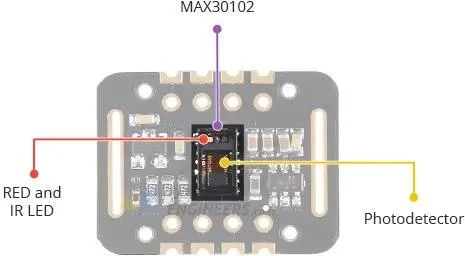
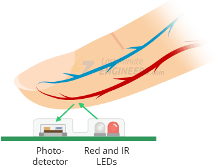
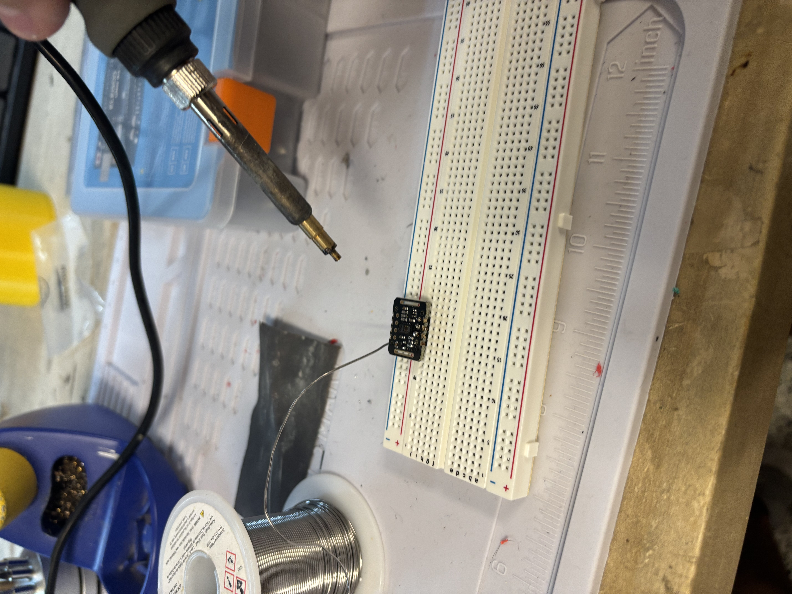
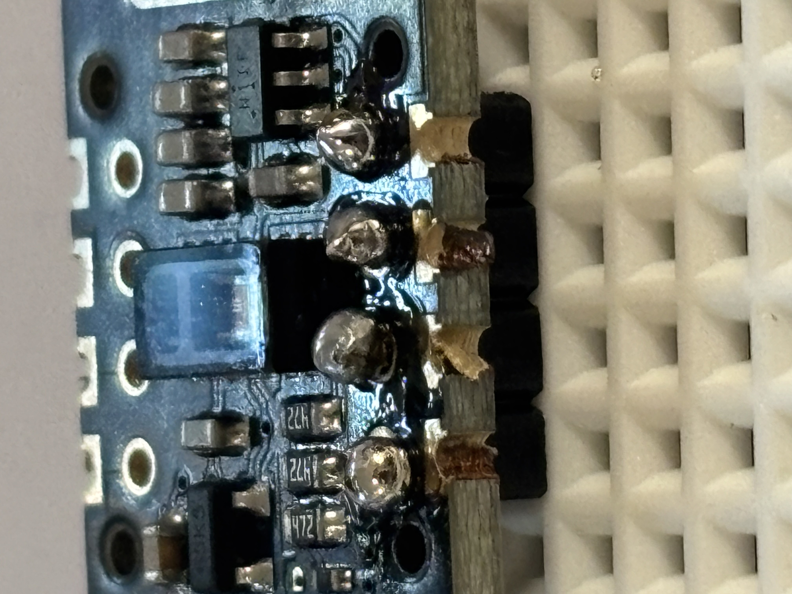
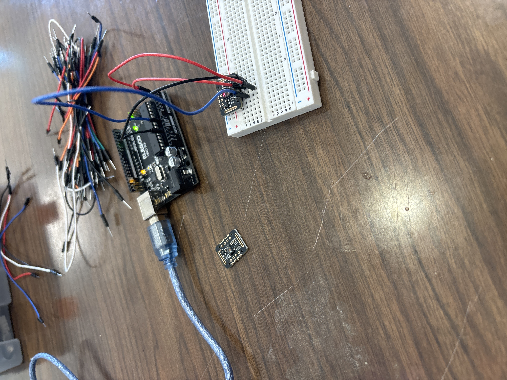
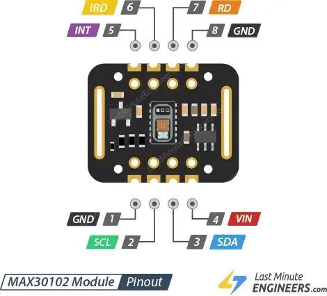
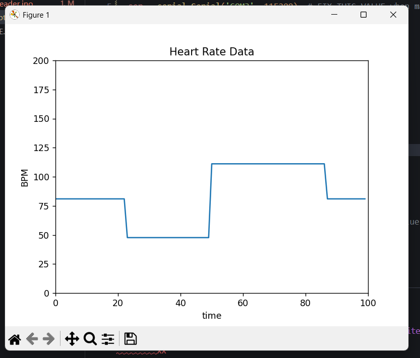
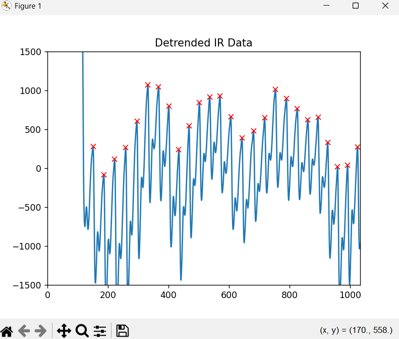
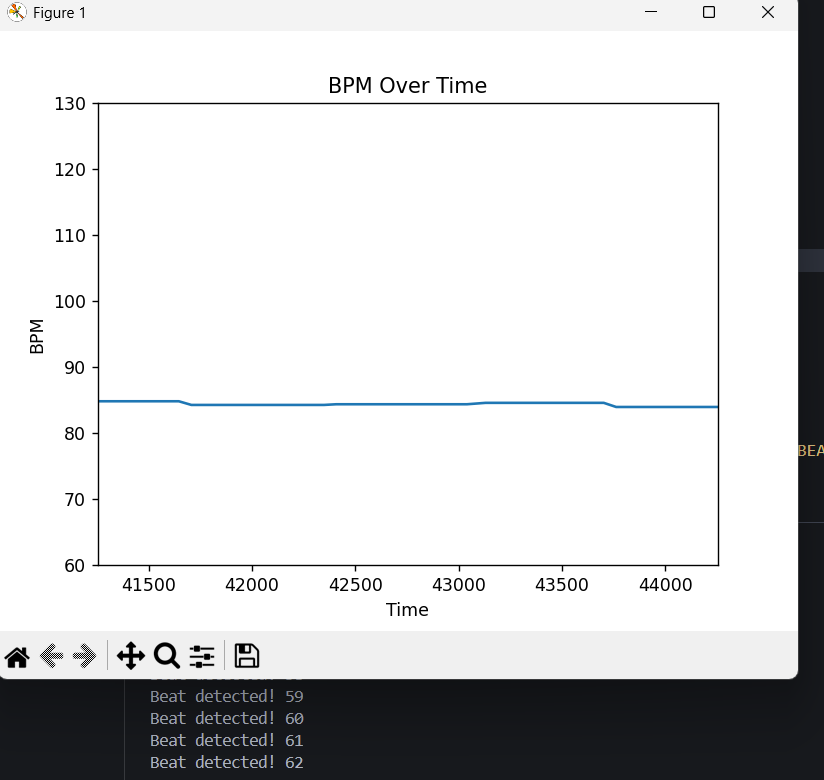

I knew for this project I wanted to have some way of measuring heart beats. I looked into some options and ended up deciding on the MAX30102 Oximeter and Heart Rate Sensor Module. This module generates infrared (IR) and red light that penetrates the skin and underlying tissues. It detects the amount of light absorbed or reflected by blood. When the heart beats, the blood volume in the finger (or any other part of the body) changes, causing corresponding changes in light absoportion. We can use this fact to accurately detect pulse rate and/or blood oxygen levels.
 In order to use the MAX30102, I would need a microcontroller along with a breadboard and some jumper wires. Once the device was set up, I figured I could connect it to my computer and interpret the data from there. Luckily, the MAX30102 has an Arduino library built specifically for this purpose, meaning I would not need to do all of the hard data analysis on my own.
I began by buying the MAX30102 module on Amazon. Unfortunately, after waiting a week it had still not arrived, so I bought another one from a different supplier, which came within two days of purchase. As for the microcontroller, jumper wires, and breadboard, I heard that BLIECE (Black Latino and Indigienous in ECE) was hosting an Arduino workshop where they would be giving out these exact materials, and they would also teach us some basics on how to use them. I attended this and was ready to begin building.
With all of the materials gathered, I headed over to the Aero Maker Space (AMS) at Georgia Tech so I could use a soldering iron to solder my MAX30102 onto its associated header pins.
 After soldering, I connected the arduino to the correct MAX30102 pins, as shown below.
 With the connections made, I was ready to move on to writing the code and interpreting the device's outputs.
I was quite lost on how to get the data from the MAX30102 onto my computer, but I found this article which went into some detail on how to setup and use the MAX30102. In the article, they use Sparkfun's library for the MAX30102 to detect heart beats. I took some inspiration from their code and got my own version running. However, I was unsatisfied with simply printing the BPM values to the terminal, and wanted to have a better visual for the user.
I did some more research and found out I could transmit the MAX30102 data into a Python program using the PySerial library. Python is great for data interpretation and visualization, so this got me excited. With PySerial and Matplotlib for visualization, I wrote a program that would take the heart rate date and give me a good visualization.
This is where I had originally planned on ending the project. However, as you can see, the heart rate data is quite jumpy and innacurate. In my current implementation, I was using the checkForBeat() method provided by Sparkfun's MAX30102 library, but it didn't seem to be working to the standard I had originally wanted. It would miss beats very often, and sometimes overcount beats leading to large jumps in BPM. I tried messing around with some configurations still using this method, but ultimately decided that I wasn't going to be able to get accurate BPM measurements.
So what did I do? I was under the impression that my hardware was faulty or maybe just
not precise enough to ever give me a chance at getting accurate BPM measurements. However,
as one last try at improving the measurements, I decided to look at the raw IR data that
the device was providing, and noticed that there was a clear spike in IR when my heart
was beating, and that I could clearly identify every heartbeat on the IR graph. However,
the raw IR data was quite spiky and jumpy, and sat in the large range of 125,000 - 132,000.
To fix this, I wrote some code to maintain a moving average of some fixed size, and for
each additional IR value that I receive, I would display (irValue - movingAvg), instead of
the raw value. This smoothed out the data a lot and told me how each value corresponded to
previous values, giving me a better chance at finding peaks where heart beats occur.
Visualizing the results of this approach in Python gave me the image below: (Note, this
visualization was made on pre-recorded data gathered by myself over the course of ~15
seconds)
For each heart beat, there is a small peak, followed by a large peak, followed by a big drop. The large peak occurs at the moment the heart beats, so now my goal was simple: find a way to identify the large peaks and keep track of them. I looked into several approaches by ended up deciding on using the SciPy library, which has a method called find_peaks. This method takes in several values, like a minimum height, minimum distance between peaks, prominence, etc, allowing for tuning based on different needs. After some experimenting, I achieved the graph below:
This worked perfectly. Now that I've confirmed I can accurately identify peaks, I just need to do this on live data. I had to tune the find_peaks to work on live data, giving the result below:
Now that I can accurately identify heart beats with live data, all I need to do is edit my code to take note of these heart beats and do some simple calculations to determine bpm. Similar to my display of the IR data, I decided to maintain a rolling average of bpm to reduce the effects of any random variations in heart rate (which are a natural occurence). I ran this on live data and got the result below:
If you'll notice, the terminal is printing a statement every time my heart beats. I implemented this so I could see how accurate my outputs were and found that it was around 95-98% correct. The accuracy greatly depends on being still and proper tuning of the find_peaks method, likely due to the great sensitivity of the MAX30102 module. I compared these results to the heart rate measured by my Garmin Forerunner 245 fitness watch, and saw that my device's displayed bpm was within 1 beat per minute of the Garmin watch, meaning this new model is significantly more accurate than what I had when I was using the default Sparkfun library.